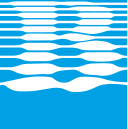

How the six scripted questions look in Claude. The cards are the real cards the connector sends, filled with what it actually returns, and every date follows today. The rule: every answer is one card plus one or two sentences.
To try it yourself, download the connector with the button at the top and drag it into Claude Desktop under Settings › Extensions. The chat frame around the cards is neutral; Claude decides its real look and fonts. Press a button on a card to see the sentence it would send to Claude. After changing the connector, run npm run docs in bct-crm-mcp to refresh these cards.
You're $400K short with nine weeks to go. Data Lake alone would close the gap, and it has been quiet for a month.
Start with Gulf Harbor: the pricing is a day late and they close on Monday.
Khalid's request belongs to a deal you already have. Link it so it isn't tracked twice?
Here's what I'll update on the Data Lake deal. Save these?

Allow BCT CRM to save changes?apply_changes will update OPP-1042 Data Lake modernisation.
Saved. The proposal is due tomorrow. Want me to draft the phased outline?
Done. The deal is back to how it was before the meeting note.